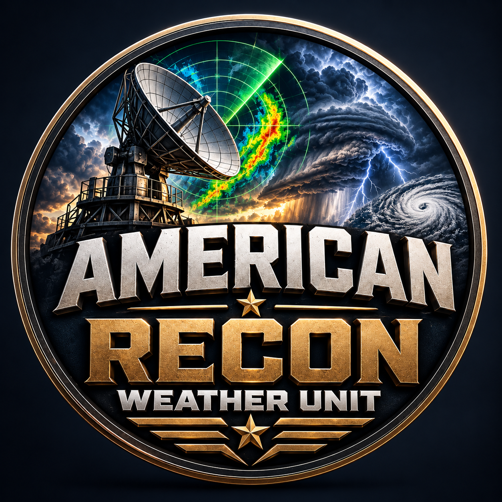

Personal Weather Briefing
Weather at My Location
Search any United States city or ZIP code for current conditions and a five-day planning forecast.
Enter a location to create your personal ARW weather briefing.

American Recon Weather Unit
Live U.S. radar, satellite, severe weather, tropical and forecast intelligence
Personal Weather Briefing
Search any United States city or ZIP code for current conditions and a five-day planning forecast.
Nationwide Situation Report
Threat levels are calculated from active National Weather Service alerts. They describe current alert activity, not a prediction.
LOW means no matching active alerts were found. ELEVATED, HIGH and EXTREME represent increasing numbers or severity of official alerts. Always open the official alert for local instructions.
Weather Field Guide
Reflectivity shows energy returned to the radar. Stronger colors can indicate heavier precipitation, but hail and non-weather objects can also produce stronger returns.
Velocity measures motion toward or away from the radar. Strong inbound and outbound differences near each other can indicate rotation, but trained interpretation is essential.
Visible satellite imagery shows reflected daylight. Infrared imagery measures cloud-top temperatures and continues operating at night.
Outlooks describe probability across an area. A watch means prepare for possible hazardous weather. A warning means dangerous weather is occurring or imminent and people should act.
Welcome, weather explorer! Choose a lesson to discover what radar colors, cloud patterns and forecast maps mean. The pictures are teaching illustrations, not live observations.
Radar sends pulses of energy and measures the echoes returned by precipitation and other targets. Reflectivity is displayed in dBZ: higher values mean stronger echoes. Drop size, particle concentration and hail all affect the return.
Read the color legend, observation time and animation together. Blue and green commonly represent weaker returns; yellow and red commonly represent stronger returns. Colors alone cannot identify a tornado or provide an exact surface rainfall rate.
A strengthening area of echoes moving toward your city may signal approaching heavier precipitation. Check its trend across several frames. The radar beam samples higher above the ground farther from the station, so an empty area does not always mean dry conditions.
Doppler velocity measures the component of target motion directly toward or away from a radar. Green commonly indicates inbound motion and red outbound motion. It does not measure the full wind vector.
Locate the radar first and check the legend's units. Winds moving mainly across the beam may show weak radial velocity even when actual winds are strong. Base velocity and storm-relative velocity are different products.
Red and green across a broad radar display can be a normal wind pattern. A small, concentrated change deserves closer analysis, but opposite colors by themselves do not establish rotation or a tornado.
Rising air encounters lower pressure, expands and cools. When it becomes saturated, water vapor can condense onto tiny airborne particles. Clouds consist of small liquid droplets, ice crystals, or both—not simply invisible water vapor.
Look at cloud shape and growth. Flat layers often accompany stable conditions; growing towers indicate rising air. Moisture, instability and a lifting mechanism help thunderstorms develop, while wind shear can influence their organization.
A small cumulus cloud that rapidly builds upward suggests an active updraft. It may develop into a thunderstorm if conditions support continued growth. Cloud growth alone does not guarantee severe weather.
Visible imagery measures reflected sunlight and helps reveal cloud texture during daylight. Infrared imagery measures emitted thermal radiation and can show clouds and surface features during both day and night.
Cold infrared cloud tops often indicate high clouds, but thin cirrus can also be cold. Enhancement colors depend on the product's temperature scale. Visible brightness is influenced by cloud thickness and sunlight.
Use visible imagery to examine developing cloud towers during the day. Use infrared to follow cloud-top temperature trends overnight. Neither image alone tells you the rainfall amount reaching the ground.
Air temperature measures how warm the air is. Heat index combines temperature and humidity to estimate apparent heat under shaded, light-wind conditions. Humidity slows the evaporation of sweat, reducing cooling.
Check temperature and heat index separately. Direct sunshine, physical exertion and limited airflow can increase heat stress beyond what a displayed heat index suggests.
Two locations with the same air temperature can feel very different if humidity differs. When planning outdoor work, consider exposure, duration and cooling breaks—not just the thermometer reading.
Fronts mark boundaries between air masses. Cold fronts advance colder air; warm fronts advance warmer air. Low pressure often supports rising air, while high pressure often favors sinking air.
Blue triangles and red semicircles indicate the advancing side of cold and warm fronts. Closely spaced isobars indicate a stronger pressure gradient, which commonly supports stronger winds.
An approaching cold front may bring a wind shift, showers and a temperature change. The timing and severity depend on moisture and atmospheric stability; every front does not produce thunderstorms.
A velocity couplet is a nearby pairing of inbound and outbound radial velocities. Its geometry relative to the radar matters: organized rotation can create a concentrated velocity contrast across a storm.
Examine the feature's size, strength, persistence, radar distance and surrounding storm structure. Beam height and velocity aliasing can complicate interpretation. Not every red-green boundary is rotation.
Rotation aloft does not establish that a tornado has reached the ground. Meteorologists combine multiple radar products, environmental information and reports. Follow official warning instructions rather than waiting to interpret a signature yourself.
An outlook identifies potential hazards over a forecast period. A watch means conditions support hazardous weather in the watch area. A warning means the specified hazard is occurring or imminent.
Read the hazard, affected location, expiration time and recommended action. An outlook category is not a guarantee of a storm at your home. Warning areas are often more specific than watch areas.
A thunderstorm watch is a time to prepare and monitor updates. A tornado warning affecting your location requires prompt shelter according to official instructions. Warnings can be issued without a watch already being in effect.
Rainfall forecast maps show expected precipitation accumulation over a stated period, often called quantitative precipitation forecasts or QPF. These totals are different from the probability that measurable rain will occur.
Check the units, start and end times, legend and forecast issue time. A 24-hour total and a three-day total cannot be compared without accounting for their different periods.
A forecast of two inches is not a promise that every neighborhood receives exactly two inches. Narrow storm bands can produce much higher local totals. Flood potential also depends on rainfall rate, drainage and how wet the ground already is.
Official NWS Live Product
Select a radar station to view its latest animated base-velocity loop. Velocity is station-based, so there is no single national velocity mosaic.